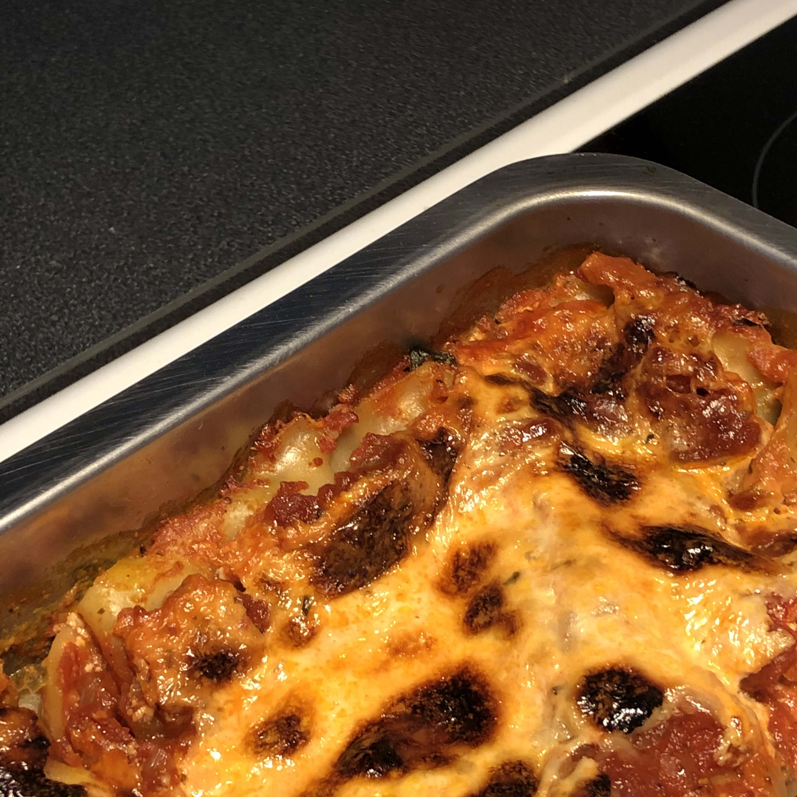

Bästa vegetariska lasagnen

En klassiker!
8 portioner
GRÖNA:
2 paket fryst bladspenat (tinad)
600 g keso
150 gram riven ost
muskot - riv!
salt & peppar
blanda i en bunke
RÖDA:
4 gul lök - hacka, fräs i olja
6 vitlök
2-3 msk tomatpuré
1,5 grönsaksbuljongtärning
peppar & basilika
4 tomatkross
koka utan lock i 10 min
i smörjd form:
-> 1/2 av det gröna
-> lasagneplattor
-> 1/2 av det röda
-> lasagneplattor
-> 1/2 av det gröna
-> lasagneplattor
-> 1/2 det röda
varva
150 g riven ost
5 dl mjölk
ha på
sätt in i ugnen
grädda i 225 grader till fin färg (ca 35 min)